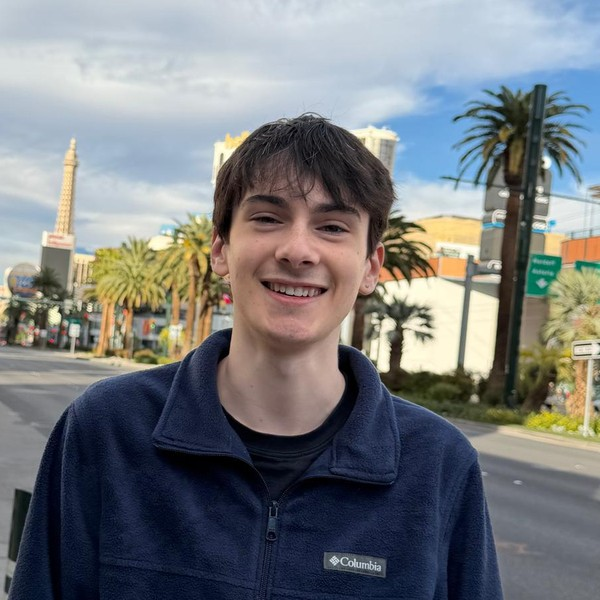

Ilan Sela
M.S. student in Computer Engineering, Texas A&M University
I am advised by Prof. Tie Liu, and my master's thesis studies the training dynamics of one-step generative models. I also build agents for automated discovery.
I came to generative models through probability. At heart, a generative model is a learned probability distribution, and figuring out how training gets it there is the kind of puzzle I enjoy. I am applying to Ph.D. programs for Fall 2027.
I obtained my B.S. in Electrical Engineering, with a minor in Computer Science, from Texas A&M, where I wrote my undergraduate thesis with Prof. Tie Liu and briefly worked with the SETH Lab.

News
- May 2026 Our work on reinforcement-learning-based radar self-calibration was accepted for presentation at the 2026 MKO Safety & Risk Conference.
- Aug 2025 Started my M.S. at Texas A&M, with a Qualcomm Graduate Scholarship.
- May 2025 Graduated summa cum laude with a B.S. in Electrical Engineering.
Research
MKO Safety & Risk Conference 2026
A Reinforcement Learning-Based Self-Calibration Framework for Radar Systems in Offshore Crane Applications
Offline reinforcement learning that calibrates MIMO radar without specialized measurement equipment, by rewarding image quality.
Undergraduate Thesis · 2025
Black-Box Offline Optimization via Large Language Models
Fine-tuning LLMs to propose high-scoring designs from a fixed offline dataset.
Experience
Research
- 2025–now Graduate Researcher, Texas A&M, with Prof. Tie Liu. Training dynamics of one-step generative models.
- 2026 Graduate Researcher, Texas A&M, with Prof. Dileep Kalathil. Agents for automated discovery (AgentDiscover).
Industry
- 2025 Embedded Software Intern, Luminator Technology Group.
Teaching
- 2026 Mentor, Agentic Intelligence for Discovery and Exploration (AIDE) Workshop.
- 2025 Student Assistant, ECEN 740: Machine Learning Engineering.